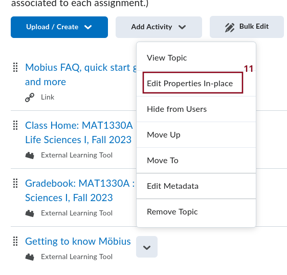

Creating Links to Assignments on Möbius
Introduction
On this page, we assume that you already have created some assignments in your course on Möbius or that someone has already created the assignments for you. We also assume that you have created a module in BrightSpace for the assignments like the one below.
Procedure to Create a Link to an Assignment on Möbius
To add an assignment from Möbius, click on the drop down menu Add Activity (item 1 in the figure above) to get the following choice of items.

-
Select the item Mobius LTI (item 2 in the figure above) to get the following form.
-
The course name in the box identified by the item 3 in the figure above should be your course in Möbius. You should not modify this field. By default, this should be the course that you have created and linked to as explained on the site . Select the assignment in the drop down menu identified by the item 4 in the figure above. In the present case, Getting to know Mobius, and click on Link to Assignment (item 5 in the figure above). DO NOT click on Link to Class Home. You should then be sent back to your module on BrightSpace for the assignment.
- If you click on Getting to know Mobius. you will get
the introductory page to the assignment as the students will see it
when they click on Getting to know Mobius. This page
includes all the instructions and policies as defined on
Möbius.
BrightSpace Setup for the Link to an Assignment on Möbius
-
Going back to the module for the assignments on BrightSpace, you may want to add a description to your new assignment or at least the starting and due dates and times. To do so, select the drop down menu marked by a down arrow beside the title of the assignment (item 10 in the figure above). You get the following list of items.
 -
Select the item Edit Properties In-place (item 11 in the figure above) to get the following form below the title of the assignment.
The box beside Open as External Resource (item 13 in the figure above) should be checked by default. If it is not, you must check this box, at least for the first assignment. If you do not do that, students may be timed out when trying to buy the license. So, they will not be able to buy the license and they will contact you. You do not want that.
In fact, you should probably always use the option Open as External Resource because it also gives a lot larger display for the questions of the assignment.Some versions of BrightSpace may also have a drop down menu under Edit Properties In-place where you have to indicate if the assignment is graded or not. BrightSpace at the University of Ottawa does not seem to have this menu. The assignment is a graded one by default. If you select Add dates and restrictions ... (item 12 in the figure above), you get this extended form.
We focus this discussion only on the items Start Date, Due date, and End date (items 14, 15 and 16 in the figure above, and items 17, 18 and 19 in the figure). You enter the starting and due dates and times as they are on the Möbius assignment. You should set the end date and times as the due date and time. That way, students cannot click on the link after the due date and time; this is good to do if you want to avoid requests for extension from the students.
After pressing the Update button (item 20 in the figure above), you get the following display on the Module for the assignment.
Grades on BrightSpace
If you look in the section Grades on BrightSpace, you may not find a column with the assignment that you have just created. It is going to be created when students start submitting their assignment unless you have turned off Show Final Grades when you created the assignment on Möbius.
When the column for your new assignment will have been created, you may want to edit it (item 21 in the figure below) as explained in section Managing Grades on BrightSpace on the site .